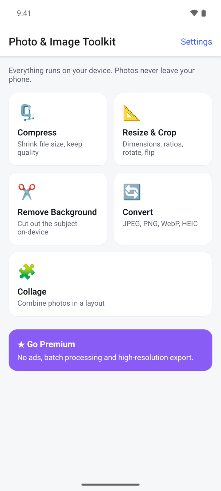
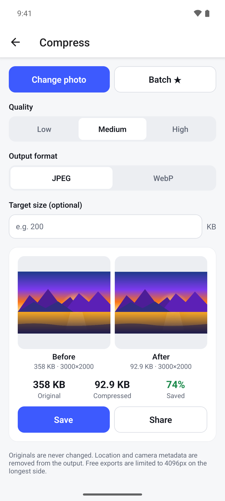
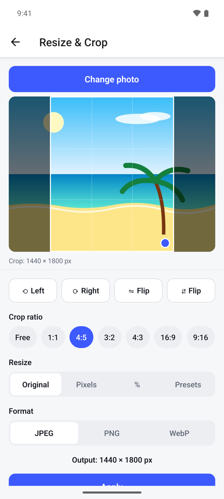
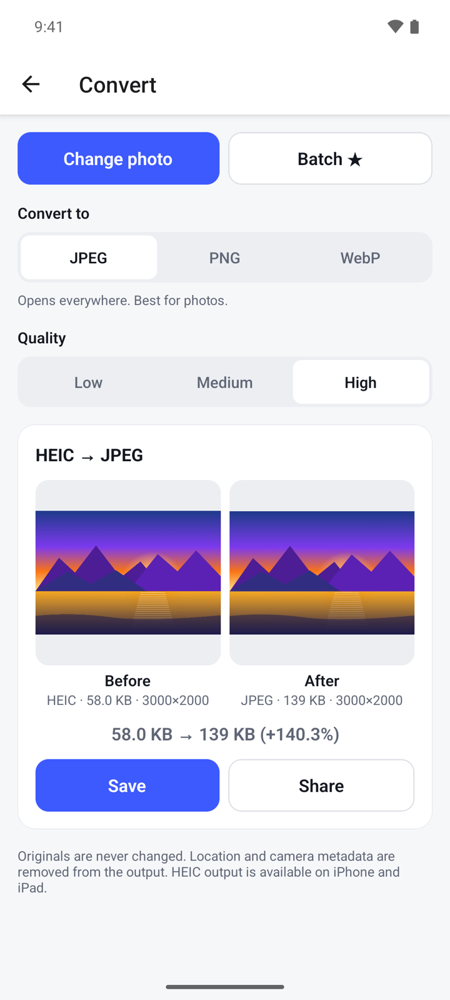
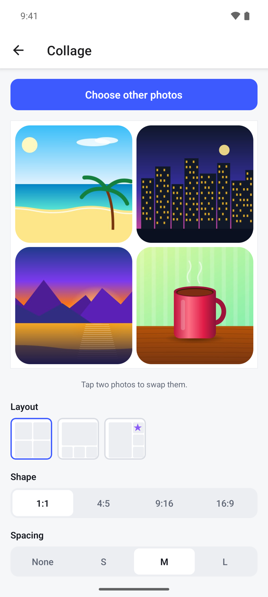
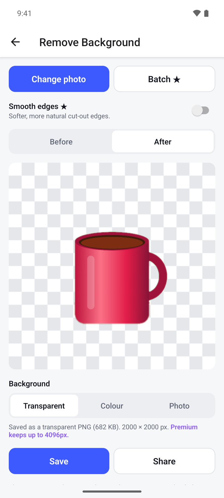

What it does
Photo & Image Toolkit puts five everyday photo tools in one app: compress, resize and crop, convert, collage and background removal. Every tool works on your phone and saves a new copy, so your original photo is never changed.
- No account. Photos are processed on your device and never uploaded.
- The app only sees the photos you pick.
- Location and camera details are removed from the copies it saves.
- Free with ads. A one-time Premium purchase removes ads and adds batch processing.
Get started
- Open Photo & Image Toolkit. The home screen shows the five tools.
- Tap a tool, for example Compress.
- Tap Select photo and pick a photo. The app does not ask for access to your whole photo library.
- When the result is ready, tap Save to keep it as a new photo, or Share to send it to another app.

Compress a photo
- On the home screen, tap Compress, then Select photo.
- Under Quality, choose Low, Medium or High. Low gives the smallest file.
- Under Output format, choose JPEG or WebP.
- If the file must stay under a certain size, type it in Target size (optional), in KB.
- Tap Compress. You see the photo before and after, with the original size, the new size and how much you saved.
- Tap Save or Share.

If the target size cannot be reached without heavy quality loss, the app tells you and gives you the smallest result.
Resize, crop, rotate or flip
- Tap Resize & Crop, then Select photo.
- Under Crop ratio, keep Free or pick a fixed shape such as 1:1, 4:5 or 16:9.
- Drag inside the crop box to move it. Drag the blue dot in its corner to make it larger or smaller.
- Tap ⟲ Left or ⟳ Right to rotate the photo. Tap a Flip button to mirror it.
- Under Resize, choose Original to keep the size, Pixels to type a width, % to scale by percent, or Presets for ready-made sizes for social media and documents.
- Under Format, choose JPEG, PNG or WebP.
- Check the Output line for the final size, then tap Apply.
- Tap Save or Share.

Convert to JPEG, PNG or WebP
- Tap Convert, then Select photo. HEIC, PNG, WebP and JPEG photos can be opened.
- Under Convert to, choose JPEG, PNG or WebP. A short note under the buttons says what each format is good for.
- For JPEG and WebP, choose a Quality: Low, Medium or High.
- Tap the Convert to button at the bottom of the card, for example Convert to JPEG.
- Compare the size before and after, then tap Save or Share.

If the photo has transparent areas and you pick JPEG, the app warns you that they will become white.
Make a collage
- Tap Collage, then Select photos. Pick 2 to 9 photos.
- To change the order, tap one photo in the preview, then tap the photo to swap it with.
- Under Layout, pick how the photos are arranged. Layouts marked with ★ are part of Premium.
- Under Shape, choose 1:1, 4:5, 9:16 or 16:9.
- Set the Spacing between photos, the Corners (Square, Soft or Round) and the Background colour.
- Under Format, choose JPEG or PNG.
- Tap Create collage, then Save or Share.

Remove a background
- Tap Remove Background, then Select photo. The app cuts out the subject right away. It works best with one clear subject: a person, pet or product.
- Tap Before and After to compare the cut-out with the original.
- Under Background, choose what goes behind the subject:
- Transparent: saved as a transparent PNG.
- Colour: pick one of the colours shown.
- Photo: tap Choose background photo and pick another photo.
- Tap Save or Share.

The cut-out is made on your device. The first time you use this tool, your phone may need to be online for a moment to fetch the cut-out model through Google Play services.
Open Settings
- On the home screen, tap Settings in the top right.
- Under Premium, see whether you are on Free or Premium, tap Upgrade to Premium, or tap Restore purchases.
- Under Privacy, open the Privacy Policy or the Terms of Use. In some countries you also see Ad privacy choices, where you can change your ad consent.
Premium
Premium is one payment, not a subscription. Tap ★ Go Premium on the home screen, or Upgrade to Premium in Settings. It gives you:
- No ads.
- Batch processing with the Batch button: compress or convert up to 20 photos at once, or cut out up to 10.
- High-resolution export: up to 8192 px on the longest side instead of 4096 px, up to 4096 px instead of 2048 px for cut-outs, and larger collages.
- Smooth edges for softer cut-out edges in Remove Background.
- Extra collage layouts.
If you bought Premium before, tap Restore purchases in Settings or on the Premium screen.
Questions
Does it change my original photo? No. Every tool saves a new copy. On Android the copies go to the Photo Toolkit album in your gallery.
Are my photos uploaded? No. All five tools run on your phone, also background removal.
Why is my saved photo smaller in pixels than the original? The free version saves photos up to 4096 px on the longest side, and cut-outs up to 2048 px. Larger photos are scaled down. Premium raises these limits.
Can I save as HEIC? Not on Android. You can open HEIC photos and convert them to JPEG, PNG or WebP.
Background removal shows an error. What can I do? This tool needs Google Play services. Check that you are online and that Google Play is set up on your phone, then try again.
Privacy
Your photos are processed on your device and never uploaded. The free version shows ads from Google AdMob. Read the full privacy policy.